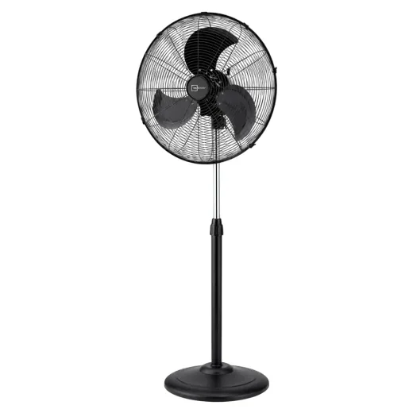
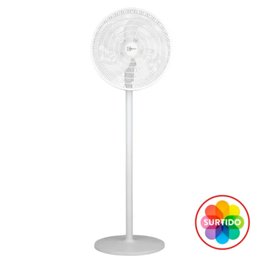
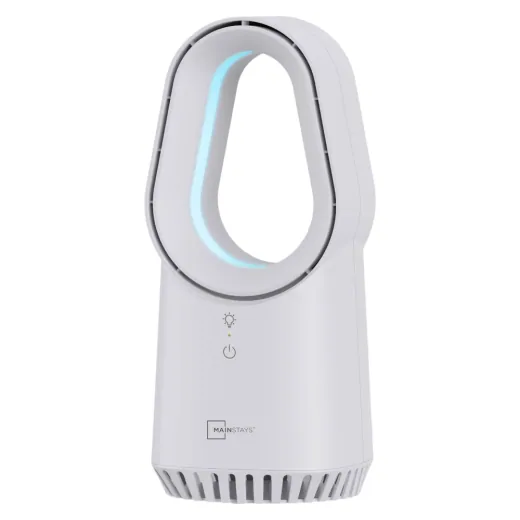
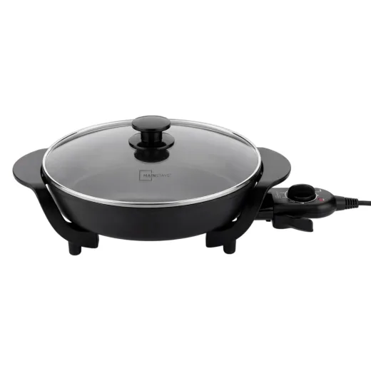
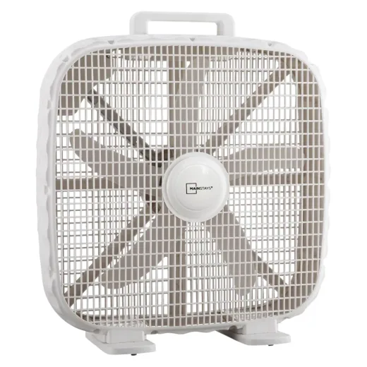

Inicio › Pequeños electrodomésticos

Mainstays
Ventilador Mainstays de pared RW 40F de 16 pulgadas
L 795
En Walmart
Precio en cada tienda
| Tienda | Precio | Antes | Disponibilidad | |
|---|---|---|---|---|
| Walmart | L 795 | — | Disponible | Ver en tienda › |
Precios referenciales tomados de cada tienda el 21 de noviembre de 2026. El precio válido es el que muestra la tienda al comprar.
Historial de precio
Lo seguimos desde el 13 de noviembre. Precio más bajo registrado: L 795 en Walmart (13 de noviembre), igual que hoy. El precio no ha cambiado en ese tiempo.
Características
| Tipo de ventilador | Ventilador de pared |
|---|---|
| Color | Blanco |
| Marca | Durabrand |
| Medida de altura | 50 cm |
| Medida de ancho | 45 cm |
| Medida de peso | 3.5 kg aproximádamente |
| Medida de profundidad | 20 cm |
| Modelo o serie del producto | RW 40F |
| País de Origen - Ensamblaje | China |
| Acabado | Brillante |
| Material | Metal y plástico |
| Uso recomendado | Ideal para usar en dormitorios, salas de estar, oficinas y espacios comerciales |
| Forma | Rectangular |
| Requiere ensamblaje | Sí |
Descripción
El ventilador de pared Mainstays RW 40F de 16 pulgadas es una solución ideal para aquellos que buscan una forma eficiente de ventilar y refrescar cualquier ambiente. Gracias a su diseño robusto y funcional, este ventilador de pared asegura una óptima distribución del aire en habitaciones de gran tamaño, proporcionando una sensación de frescura y confort de manera rápida y efectiva.El ventilador de pared Mainstays RW 40F de 16 pulgadas es la opción perfecta para quienes buscan un ventilador potente, eficiente y que ahorre espacio. Con su capacidad de oscilación y control remoto, este ventilador proporciona frescura en cualquier ambiente con total comodidad. Ideal para hogares, oficinas o espacios comerciales donde la eficiencia y practicidad son clave.
Otros pequeños electrodomésticos Mainstays

Ventilador de pedestal Mainstays 75 W de 18 pulgadasL 795En Walmart Ventilador Mainstays circulador · 6 pulgadasL 795En Walmart
Ventilador Mainstays circulador · 6 pulgadasL 795En Walmart
Ventilador Mainstays de pedestal · 16 pulgadasL 795En Walmart
Ventilador Mainstays Mini Luz Led TactilL 695En Walmart
Sartén eléctrico Mainstays redondo de 12 PulgadasL 695En Walmart
Db Ventilador De Piso 120v 60hz 80wL 995En Walmart Mainstays Hervidor De Doble Pared De 1 7L 545En Walmart
Mainstays Hervidor De Doble Pared De 1 7L 545En Walmart Plancha Mainsatys Vaporizador ManualL 495En Walmart
Plancha Mainsatys Vaporizador ManualL 495En Walmart